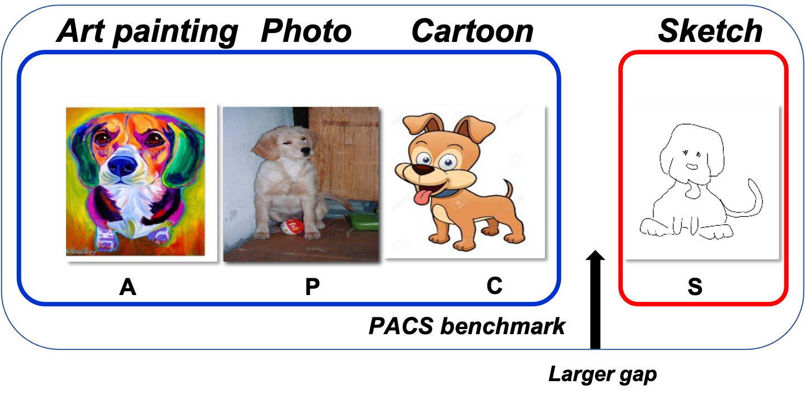

Deeper, Broader and Artier Domain Generalization
Abstract
The problem of domain generalization is to learn from multiple training domains, and extract a domain-agnostic
model that can then be applied to an unseen domain. Domain generalization (DG) has a clear motivation in
contexts where there are target domains with distinct characteristics, yet sparse data for training. For example
recognition in sketch images, which are distinctly more abstract and rarer than photos. Nevertheless, DG methods
have primarily been evaluated on photo-only benchmarks focusing on alleviating the dataset bias where both
problems of domain distinctiveness and data sparsity can be minimal. We argue that these benchmarks are overly
straightforward, and show that simple deep learning baselines perform surprisingly well on them. In this
paper, we make two main contributions: Firstly, we build upon the favorable domain shift-robust properties of
deep learning methods, and develop a low-rank parameterized CNN model for end-to-end DG learning. Secondly, we
develop a DG benchmark dataset covering photo, sketch, cartoon and painting domains. This is both more
practically relevant, and harder (bigger domain shift) than existing benchmarks. The results show that our
method outperforms existing DG alternatives, and our dataset provides a more significant DG challenge to drive
future research.
Download
You can download the dataset introduced in our ICCV paper.
Dataset
!!!Please use our official train-val splits of this dataset, which is included in
the download page, otherwise you may get very different AGG results.

BibTeX
If you think our dataset or pretrained model is useful for your research, please cite our paper. Thanks!
@inproceedings{Li2017dg,
title={Deeper, Broader and Artier Domain Generalization},
author={Li, Da and Yang, Yongxin and Song, Yi-Zhe and Hospedales, Timothy},
booktitle={International Conference on Computer Vision},
year={2017}
}